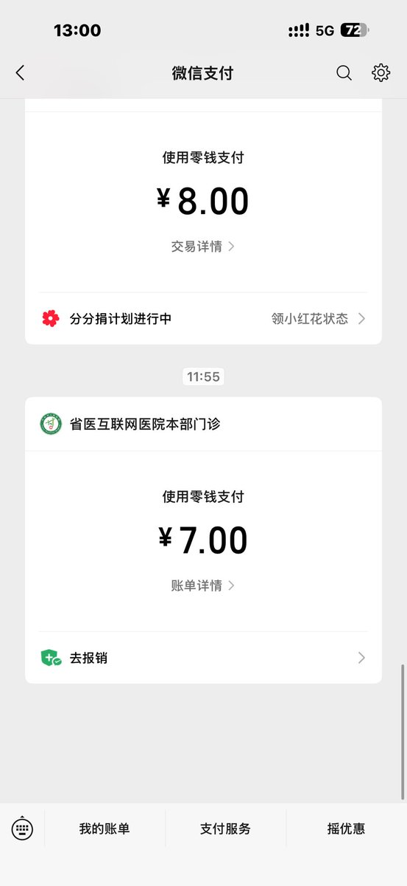

池鱼鱼🍥
@Chiyuyu520
病情需要，合理用药，医生正规开方，正规医院就诊，仅为日常分享，按照医师医嘱服用，请勿过量、非法滥用药品

池鱼鱼🍥
@Chiyuyu520
我没有，也没有渠道
你买不到的，我也买不到
你开不到的，我也开不到。
不懂化学，不会制毒
我非常疑惑有任何人私聊问我有没有xx药，有没有什么非法物质的人，他们私信我的理由是什么
如果我卖这些物质，那么我会直接说我卖
如果我有，而且我“偷着卖”，那么我肯定赚不到钱 https://t.co/Cwh6b1YpBt